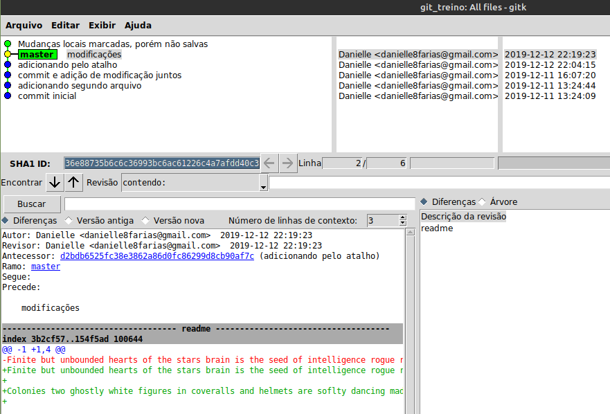
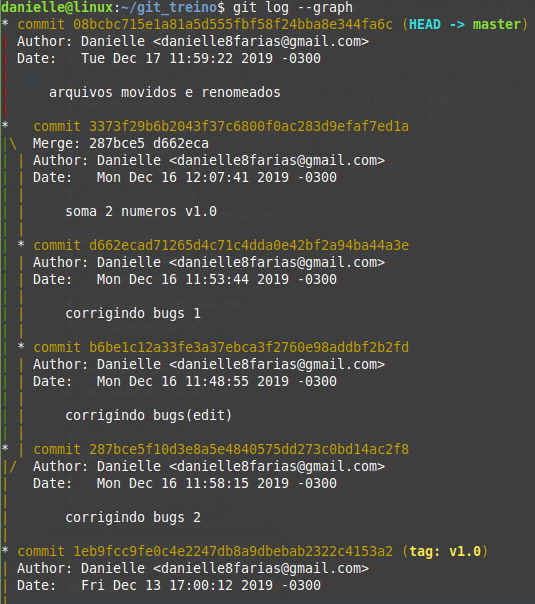

A depender do tamanho do projeto, a visualização dos commits pelo terminal pode ser difícil. Para fazer a visualização mais legível, precisamos instalar o Git repository browser.
$ sudo apt install gitk
- $ indica que você deve usar o usuário comum para fazer essa operação.
- sudo é o comando que dá permissões de super usuário temporariamente; assim é possível fazer a instalação de programas.
- apt do inglês, Advanced Package Tool, em português, Ferramenta de Empacotamento Avançada; é a ferramenta que nos ajuda na instalação, atualização e desinstalação de programas, entre outras funções.
- install é o comando de instalar, indicando ao apt o que fazer.
Assim ao digitar no terminal
$ gitk
A seguinte janela abrirá:
Visualizando grafo de commits
Outra maneira de visualizar o grafo de commits, porém sem instalar nada é através do comando:
$ git log --graph
Abaixo, um exemplo do retorno.
